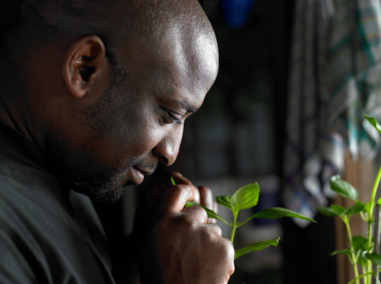

This is the navigation page for my website.
|  | Aidan's Bio |
| Home | Aidan O'Keefe is a student at the Academy for Information Technology in Scotch Plains, New Jersey. He is a senior as of February, 2015. He is involved on campus in the Relay for Life club and as the president of the Robotics club. He plans on continuing his involvement in both clubs into college and beyond.
Aidan, outside of school, is an avid video game player and enjoys composing music of his own. One of his compositions "Crawling, a noise opus" can be heard autoplaying forever in the background of this website. He hopes to achieve musical recognition and double his listening base of 3 people. |